Programming for the Conference
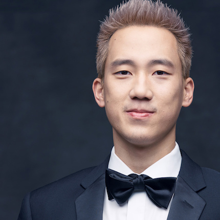
Steven Lim
Led by Video Producer at Buzzfeed
Closing Ceremony · Saturday, March 3rd
STEVEN LIM is an Executive Producer at BuzzFeed Motion Pictures. He is the creator and host of "Worth It", BuzzFeed’s flagship food show that tries three foods at three drastically different price points. Additionally, Steven produced and directed "Mom vs. Chef,” a cooking competition currently in development with NBCUniversal Cable Entertainment on bringing the web series to broadcast. Prior to working at BuzzFeed, Steven was a chemical engineer at Procter & Gamble who created videos on his personal YouTube channel. In his free time, Steven enjoys watching the NFL and NBA, keeping up with his favorite YouTubers, and he never turns down the opportunity to eat sushi or acai bowls.
Raymond Partolan
Led by Immigration Paralegal at Kuck | Baxter Immigration LLC
Morning Kick-Off · Saturday, March 3rd
RAYMOND PARTOLAN is an Immigration Paralegal at Kuck | Baxter Immigration LLC working primarily on family-based immigration cases. Before joining Kuck | Baxter Immigration, LLC, Mr. Partolan spent several years as the Program Associate at Asian Americans Advancing Justice – Atlanta, a nonprofit law and advocacy center for Asian Americans across the Southeast. There, he was a BIA Accredited Representative and prepared family immigration petitions for the most underserved populations.
For over seven years, Mr. Partolan has been a fearless advocate for immigrant and refugee communities as a DACA recipient himself. In 2013, he was a plaintiff in a lawsuit against the University System of Georgia challenging its decision to bar DACA recipients from receiving in-state tuition at Georgia schools. He has lobbied for immigration reform at the local, state, and federal levels of government, traveling the country to share his immigrant story.
He received a certificate from the Catholic Legal Immigration Network, Inc. for his coursework in a “Comprehensive Overview of Immigration Law,” and graduated summa cum laude from Mercer University in Macon, Georgia. Mr. Partolan is originally from the Philippines and is trilingual in English, Spanish, and Tagalog.
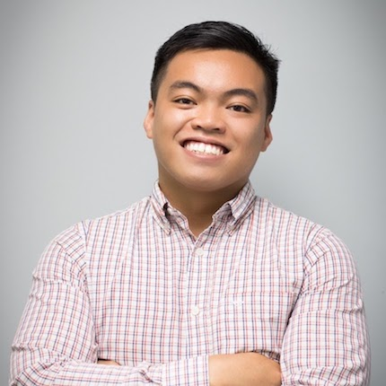
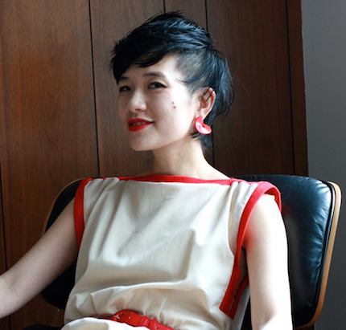
Mimi Thi Nguyen
Led by Associate Professor of Gender and Women’s Studies and Asian American Studies at the University of Illinois, Urbana-Champaign
Closing Ceremony · Saturday, March 3rd
MIMI THI NGUYEN is Associate Professor of Gender and Women's Studies and Asian American Studies at the University of Illinois, Urbana-Champaign. She is also Interim Chair of Gender and Women's Studies for 2017-2018. Her first book, called The Gift of Freedom: War, Debt, and Other Refugee Passages, focuses on the promise of “giving” freedom concurrent and contingent with waging war (Duke University Press, 2012; Outstanding Book Award in Cultural Studies from the Association of Asian American Studies, 2014). She is also co-editor with Fiona I.B. Ngo and Mariam Lam of a special issue of Positions: Asia Critique on Southeast Asian American Studies (20:3, Winter 2012), and co-editor with Thuy Linh Nguyen Tu of Alien Encounters: Pop Culture in Asian America (Duke University Press, 2007). Her papers have been solicited for the Feminist Theory Archive at Brown University. Her following project is called The Promise of Beauty.
Nguyen was first introduced to the D.I.Y. punk scene in San Diego, CA, a lasting influence that can easily be seen in her wide range of publications. She has made zines since 1991, including Slander (formerly known by other titles) and the compilation zine Race Riot. She is a former Punk Planet columnist and Maximumrocknroll volunteer. Her columns are archived at thread & circuits. She is also co-author of the (mostly retired) research blog on dress and beauty, Threadbared. In June 2013, Sarah McCarry's Guillotine ("a series of erratically published chapbooks focused on revolutionary non-fiction") released PUNK, a conversation between Nguyen and Golnar Nikpour. She toured with other zine makers of color in 2012 and 2013, and continues to organize events and shows with and for POC punks.
Diane Wong
Led by Visiting Scholar at the Asian/Pacific/American Institute at New York University
Opening Ceremony · Friday, March 2nd
DIANE WONG is a doctoral candidate in Government at Cornell University, where she writes on race, gender, and the gentrification of Chinatowns. As a writer, educator, and multimedia storyteller, her research stems from a place of revolutionary praxis and deep love for community. As a first generation Chinese American woman born and raised in Flushing, Queens, her research is intimately tied to the Chinese diaspora and urban immigrant experience. Her current research explores how gentrification led displacement politically impacts the Chinese immigrant communities in New York City, San Francisco, and Boston. Her research has been funded by the National Science Foundation, Mellon Foundation, American Political Science Association, and Smithsonian Asian Pacific American Center, and it has appeared in a variety of publications, journals, anthologies, and podcasts. Diane is currently a visiting scholar at the Asian/Pacific/American Institute at New York University where she is writing her dissertation and collaborating with community groups like CAAAV: Organizing Asian Communities, Chinatown Art Brigade, and the W.O.W. Project. Previously, Diane worked as the Social Media Organizer for 18 Million Rising and the Director of Advocacy for the East Coast Asian American Student Union on campaigns related to racial justice, civic engagement, media representation, ethnic studies, detention and deportation, and Islamophobia.
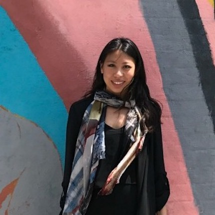
Mei Lum
Led by Owner of Wing on Wo & Co. (W.O.W)
Opening Ceremony · Friday, March 2nd
MEI LUM is the fifth-generation owner of her family’s 92-year-old porcelain ware business and the oldest operating store in New York City's Chinatown, Wing on Wo & Co. (W.O.W). In early 2016, her family’s building and business was on the brink of sale. In an effort to resist against contributing to the process of gentrification in Chinatown, Mei decided to take on the role of running W.O.W to continue her family’s five-generation-long legacy in the neighborhood and help protect the heart of Chinatown from encroaching gentrifying forces. Since May 2016, Mei has been working to bring community members' concerns of a rapidly changing Chinatown into a space for dialogue through her work with The W.O.W Project, a community initiative reclaiming ownership over Chinatown's future by reviving, protecting and encouraging Chinatown's creative culture through arts, culture and activism. This past year, Mei was recognized as an emerging voice in the APA community from NBC Asian America and was one of the honorees at the Museum of Chinese in America's Annual Community Heroes Celebration. Currently, Mei is a National Art Strategies' Creative Community Fellow where she is working to build a socially-minded business model for W.O.W that supports the future growth of The W.O.W Project.
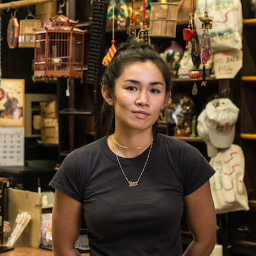
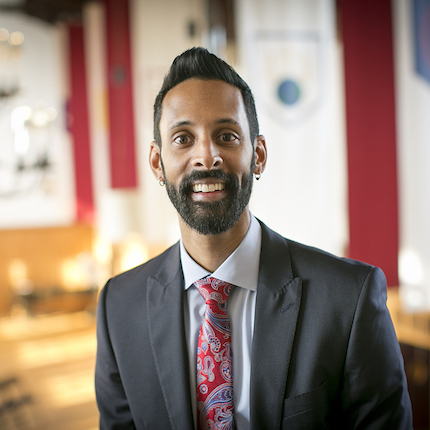
Vijay Pendakur
Led by Dean of Students, Cornell University
Opening Ceremony · Friday, March 2nd
DR. VIJAY PENDAKUR served as Associate Vice President for Student Affairs at California State University – Fullerton (CSUF) before coming to Cornell, where he led a large portfolio of units including the Career Center, Student Health Services, Counseling and Psychological Services, the Veterans Resource Center, Disability Student Services, EOP, the University Learning Center, Athletic Academic Advising, and more. While at CSUF, he created elements of the institutional strategic plan, with special focus on the equity and graduation goals for our low-income college students, first generation students, and students of color. Prior to CSUF, he led a department at DePaul University dedicated to promoting student success for higher-risk and underserved college students, with special emphasis on graduates of the Chicago Public School system. He started his higher education career at the University of Wisconsin – Madison, his alma mater, where he worked full-time as a diversity and social justice educator while running a new Multicultural Student Center focused on serving first year college students.
In addition to being an experienced practitioner in student affairs administration, he is also a scholar of diversity and inclusion work. For a sample of his scholarly publications, explore the book he recently edited, Closing the Opportunity Gap: Identity-Conscious Strategies for Retention and Student Success. He has also published chapters and articles in New Directions in Higher Education: Reclaiming Higher Education’s Purpose in Leadership Development, Leadership Theory: A Facilitator’s Guide for Cultivating Critical Perspectives, Diversity & Democracy, The Leadership Exchange, as well as chapters in several books focused on Asian American college students.
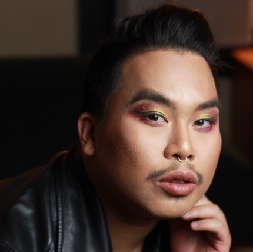
Paul Tran
Led by Poetry Editor at The Offing
Closing Ceremony · Saturday, March 3rd
PAUL TRAN is Poetry Editor at The Offing and Chancellor's Graduate Fellow in The Writing Program at Washington University in St. Louis. Their work appears in The New Yorker, POETRY, and elsewhere, including the movie Love Beats Rhymes starring Jill Scott, Common, and Azealia Banks. Paul is the first Asian American since 1993 to win the Nuyorican Poets Cafe Grand Slam, placing Top 10 at the Individual World Poetry Slam and Top 2 at the National Poetry Slam.
DJ Phatrick
Led by DJ, Producer
Closing Ceremony · Saturday, March 3rd
DJ PHATRICK is a father, teacher, DJ, producer, and audio engineer. He is DJ and producer for Bambu Depistola and the host of multiple Los Angeles-based radio programs/projects including: Motown on Mondays LA, Libre LA, Radio Sombra, and Devil’s Pie. Whether in the classroom or club, studio or streets, he operates under the firm conviction of using music as a tool for community building and social change.
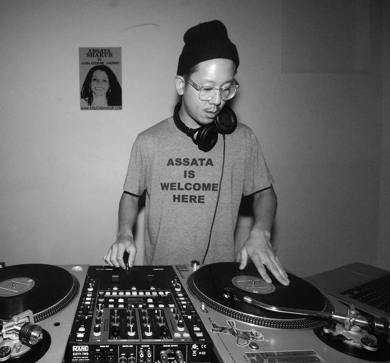
Bambu
Led by Father, Rapper, MC, and Community Organizer
Closing Ceremony · Saturday, March 3rd
BAMBU is a father, MC, and community organizer. Raised in the Watts district of Los Angeles, as a young boy he experienced a life that other rappers have glorified, but rarely experienced. As he navigated through a turbulent youth, Bambu turned around the destructive energy that surrounded him and poured it into making music.
Bambu has been lauded by his fans and contemporaries for his lyrical storytelling abilities. Whether fictional or autobiographical, his vividly-detailed narratives are characterized by an honesty that is equal parts brutal, thought-provoking and liberating. Bambu’s music is not for mere performance – he utilizes his music as a tool for a larger goal – to reach and support youth who face similar issues that he did, and move them to question what goes on in the world around them. Bambu has reached audiences across the country and internationally with his explosive and engaging live performances. Being paired on concert billings with such acts as Immortal Technique, Blue Scholars, Zion I, Psycho Realm, dead prez, Evidence, Atmosphere and Brother Ali, to name a few, has afforded Bambu the opportunity to garner fans from varying demographics. With a catalog of music stretching the span of ten-years, the Los Angeles emcee has allowed his fans to witness the growth of a gracefully honest artist, who truly embodies the sentiment of the people.
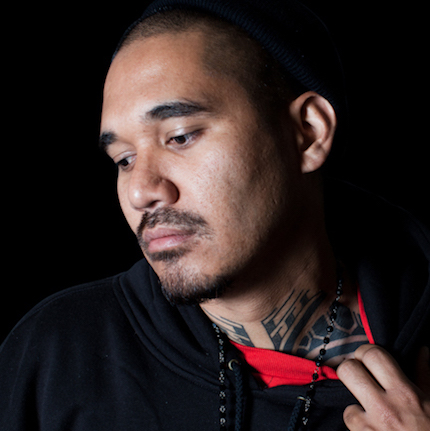
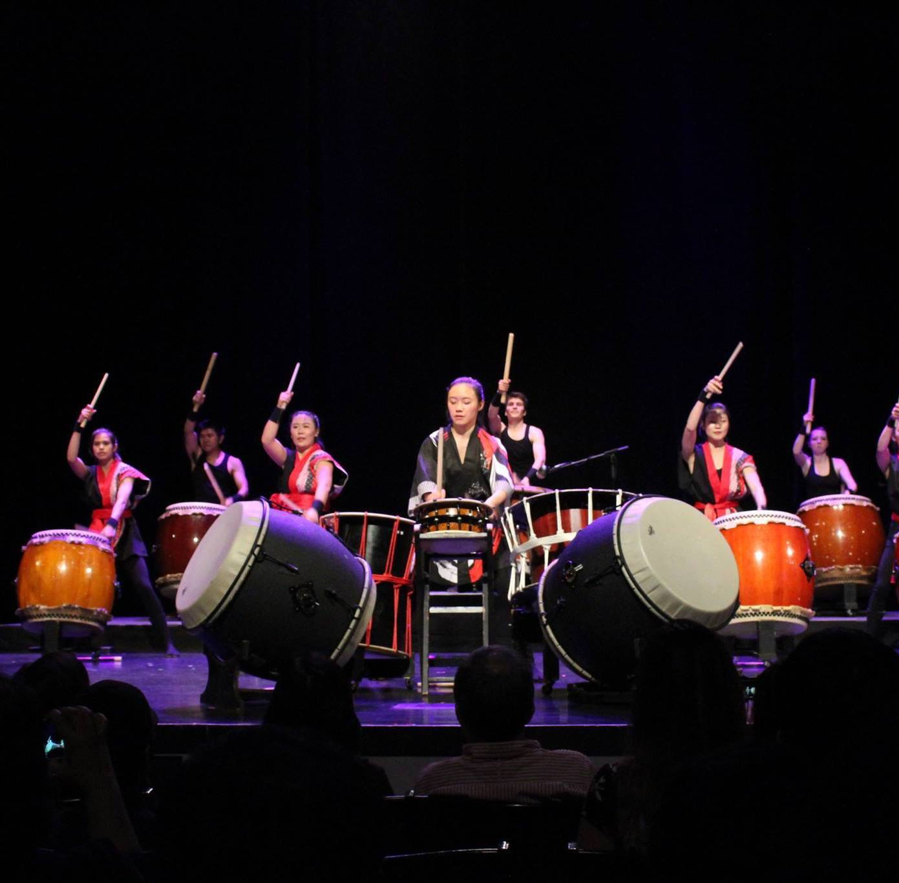
Cornell Yamatai
Opening Ceremony· Friday, March 2nd
The first and only group at Cornell that is devoted to playing and spreading the art of taiko, a form of traditional Japanese drumming.
Cornell Bhangra
Opening Ceremony· Friday, March 2nd

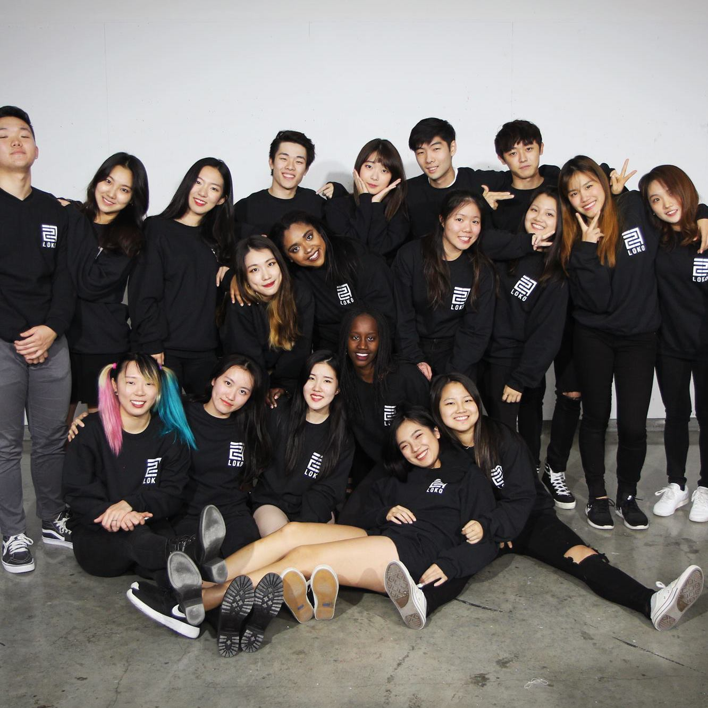